«Ведьма́к 3: Дикая Охота» — компьютерная игра в жанре action/RPG, разработанная и изданная польской студией CD Projekt RED. Изначально игра была выпущена 19 мая 2015 года на Windows, PlayStation 4 и Xbox One, затем 15 октября 2019 года на Nintendo Switch, а 14 декабря 2022 года — на PlayStation 5 и Xbox Series X/S. Является продолжением игр «Ведьмак» (2007) и «Ведьмак 2: Убийцы королей» (2011). Это третья игра, действие которой происходит в литературной вселенной книжной серии «Ведьмак», созданной польским писателем Анджеем Сапковским, а также последняя, которая повествует о приключениях Геральта из Ривии."
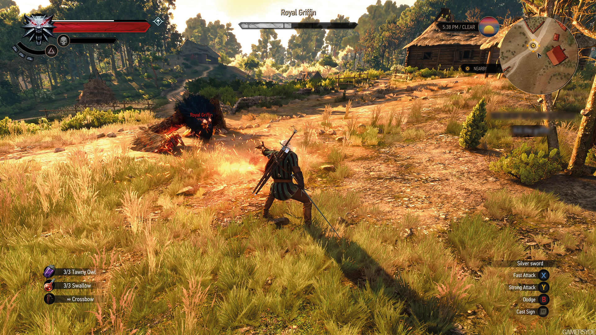
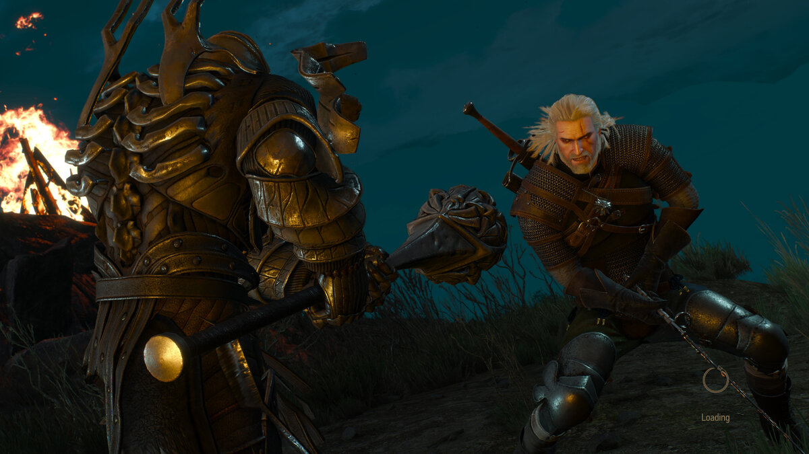
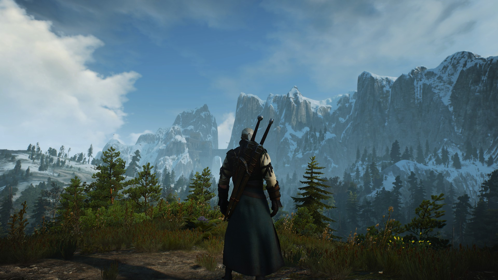
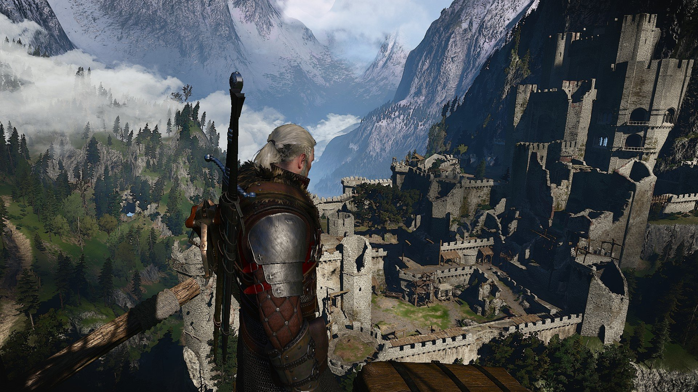
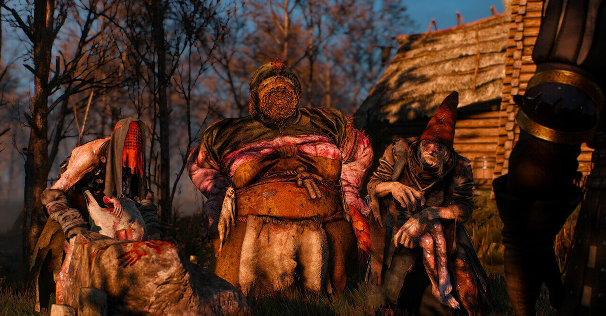
«Ведьмак 3» вполне может претендовать на звание игры с самой длинной предысторией. Он стоит на фундаменте не только двух прошлых частей, но и семи книг Сапковского. Все это — одна большая история, на полное ознакомление с которой уйдут сотни часов. Но благодаря мастерству сценаристов и нарративных дизайнеров начинать знакомство с франшизой можно с конца. «Ведьмак 3» поэтапно вводит в курс дела и дает всю нужную информацию по мере необходимости.
А что еще важнее, сюжет игры самодостаточен. Это законченная история в рамках более глобального повествования. Даже если вы ничего не знаете о мире «Ведьмака» и его обитателях, никакого дискомфорта это не вызовет. Если вам понравилась игра, однозначно стоит наверстать книжный цикл и прошлые части игровой серии. А затем — вернуться в «Дикую охоту». Все будет восприниматься совсем иначе, история станет куда глубже и эмоциональнее.
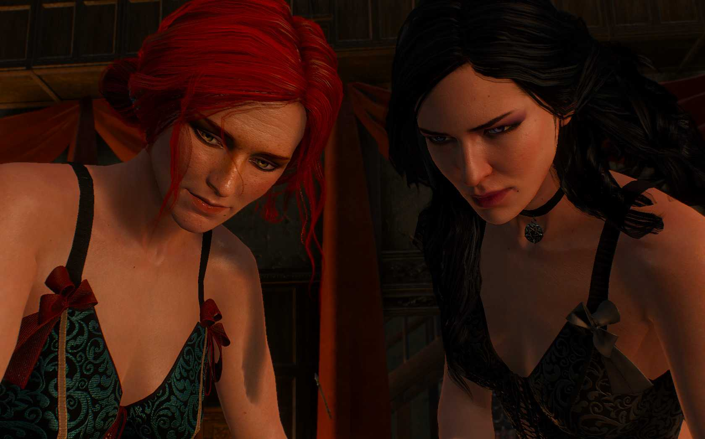
Развитие событий в игре будет полностью зависеть от ваших решений. По пути вы можете встретить разных персонажей. В новой части реализована отличная по своему уровню система сражений, благодаря которой вы получите огромные возможности для выбора тактических построений в эпических битвах. Это будут самые захватывающие бои, которые только возможны в жанре РПГ. Можно прокачать способности нашего ведьмака, для этого придется адаптировать игровой процесс под себя.
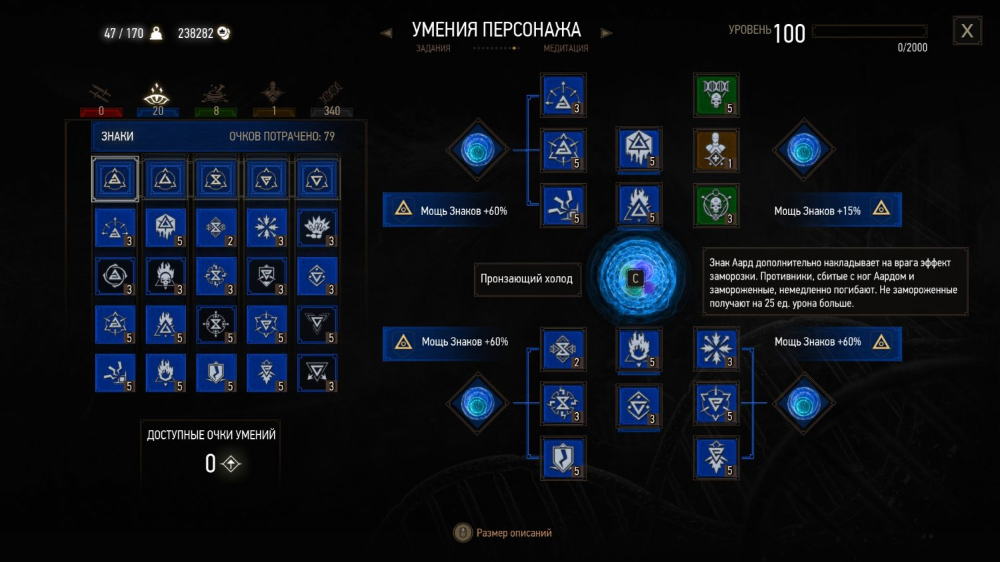 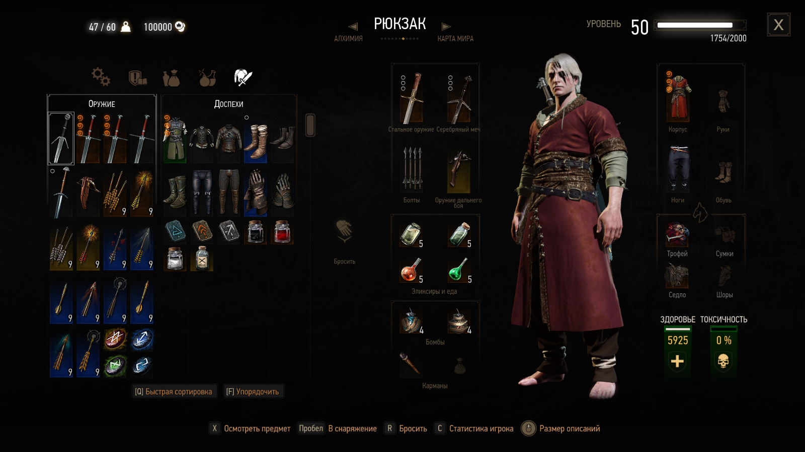
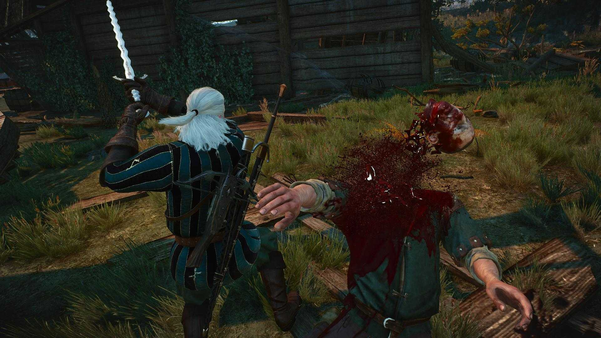Нужно выполнять все указанные миссии, искать ценные артефакты, охотиться на монстров и еще много всего. Воспользуйтесь боевыми магическими способностями, передвигайтесь на пешем ходу, на коне или под парусами корабля. Ведь перед вами открыт мир с неограниченными возможностями.
В ходе этого игрового проекта вы будете путешествовать по огромному игровому миру, максимально реалистичному. Ведь здесь есть и смена дня и ночи, и погода меняется, она запросто может разрушить все ваши планы и заставить действовать совершенно не так, как вы вначале планировали.
Согласно сюжету, сражение между Ничьей землей, суровым миром архипелага Скеллиг и успешным портовым городом Новиградом продолжается. В действительности, каждая из представленных областей имеет собственную оригинальную атмосферу, наполненную мифами и легендами из разных культур. Так что, не удивляйтесь тому, сколько времени придется потратить на исследование этого игрового мира.
На сегодняшний день вышло два дополнения к основной игре.
DLC Ведьмак 3: Каменные сердца повествует нам о загадочном и могущественном Господине Зеркале, а также о трагичной истории Ольгерда фон Эверика.
Ведьма́к 3: Кровь и вино это 30-часовое приключение, в котором Геральт отправляется в новую местность – Туссент. Эта земля не знает войны, но за атмосферой беззаботного благополучия и рыцарскими церемониями скрываются страшные кровавые тайны.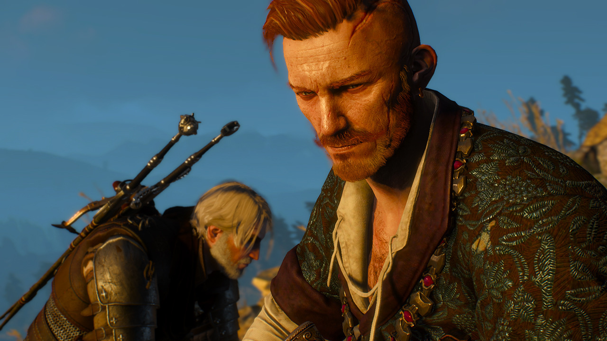 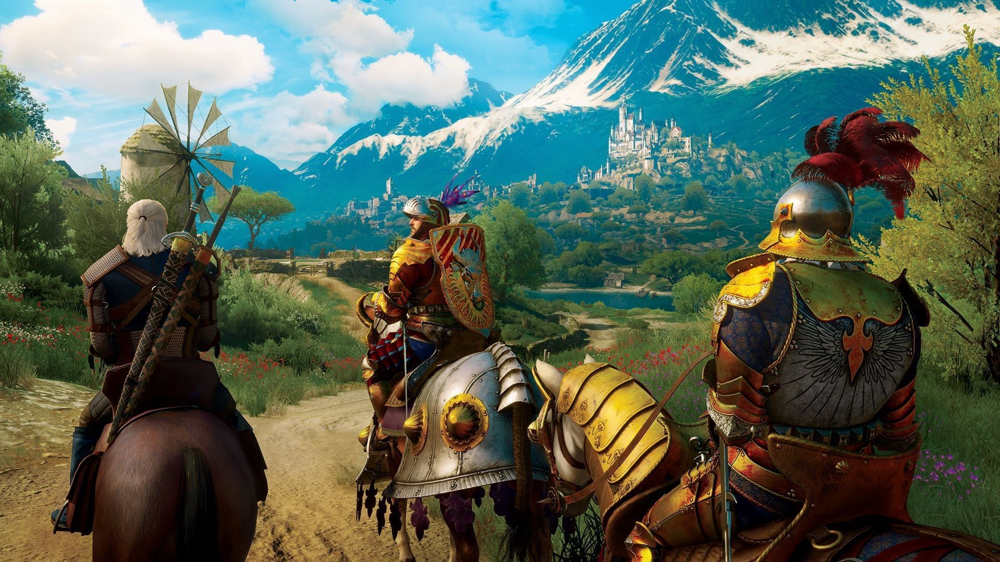